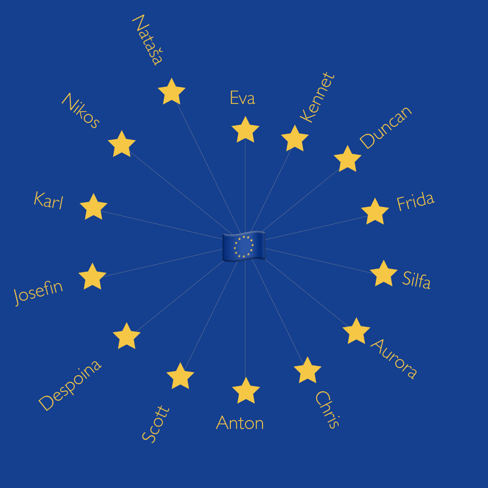

On 12 May 2018, I gathered a collection of my friends together at my home for a Eurovision watching party. We do something similar every year, but this year we took things a step further.
As the contest began, I handed out sheets of paper and pencils to everyone, and asked them to give each country a score out of ten on three scales - song, performance and staging. Everyone was a bit bemused, but did it anyway, and I ended up with a huge dataset of 1092 individual votes. I promised I'd analyse it all, and this is me fulfilling my promise, seven months later. You can find a Jupyter Notebook with all the analysis code here.
The first thing I wanted to do with the data was crown a winner from the votes at the party. As you probably remember, Israel's bonkers entry - Toy by Netta - took the prize at the official event, followed by Cyprus then Austria. But what would prove the most popular with the voters in my living room?
It's not really a surprise that Netta took the first place at our little awards ceremony too. It was an incredible performance. But what was a surprise was the popularity of Finland's entry, Monsters by Saara Aalto. It came second-to-last in the official votes, but we put it second. Similarly, Europe loved Cyprus' entry, Fuego by Eleni Fourerira, but we didn't think it was much good at all.
One of the nice things about getting people to score in terms of song, performance and staging is that we could crown a winner in each category.
Our jury felt that Austria clearly had the best song, but Israel's scores in performance and staging gave it the victory.
A thought for next year: is it right to weight song, performance and staging equally? Should one category have more weight? It is a "song" contest after all.
What's perhaps surprising is that Israel's song score ended up rather low. Netta came twelfth in that category. Austria's performance score was up there with its song score but the staging left a lot to be desired, according to our voters.
One other interesting discrepancy I'd like to note is Moldova's similarly bonkers song, which scored in the top three for staging, but a lot lower in song and performance.
A persistent question at Eurovision over the years is the importance of singing in English, which is generally the lingua franca of Europe. In 2018, about two thirds of songs were in English, and the rest were in their native languages. The only oddity was Estonia's entry, where Elina Nechayeva performed the operatic La Forza in Italian.
Our data shows that, among our voters at least, it is better to sing in English. Songs in English averaged a score of 5.73, while songs not in English got a mean score of 5.26.
If we compare the distributions of scores given to the English and non-English songs by individual voters, you can see that they're both a similar shape, but people are much more inclined to give top scores (7+) to English-language songs than they are to songs in other languages.
It's worth noting here that trying to answer this question took me down a huge rabbit hole. I'll save you most of the details, but getting a reliable answer to this question would require far more songs than there are in a single year of Eurovision. Doing a two-tailed T-test indicates that there is not a statistically significant difference between the scores receieved by the songs in English at my party and scores recieved by the songs not in English. But that doesn't mean that one doesn't exist - it just means that we can't see it in this data.
Maybe I'll crawl back through the history of the competition sometime, and to try and answer this question using the official point totals. In the meantime, all we can say from this data is that our voters gave higher scores on average to songs in English.
In Eurovision, the conventional wisdom is that going first is really bad because people will have forgotten you by the time they vote. Is that true in our group? We can find out by taking a look at a scatterplot of the running order and the scores we gave.
There's no obvious trend here, but running a simple linear regression gives us a very slight positive correlation of 1.04. That means that a song that goes last might accumulate about 25 more points, across all voters and categories, than one which goes first.
This sorta makes sense, as people might not want to give away very high scores right at the start but might be more comfortable doing that later on. But honestly, the variance in the data is so high that I'm not confident calling this a real finding. It might just be the case that it skewed positive because Israel and Finland were near the end. The only conclusion I'd be comfortable with here is that the order of performance didn't really affect the scores from our voters at all.
Time to turn our attention to the voters, rather than the countries. Different people have different internal ratings systems, and I deliberately didn't tell people how they should allocate their points. Here's a bar chart showing how many points different voters gave out over the whole night.
Despoina, Scott and Nikos were the most generous voters. The least generous were Chris, Nataša and Kennet
Some people are full of patriotic spirit. Others less so. We can see who gave an above-average score to their own country by subtracting the score they gave to that country from the average vote that others gave it, while controlling for the generosity of each voter.
In this analysis, I had to leave out Anton, Nikos & Despoina, whose countries didn't make it to the final, and Scott & Aurora, whose country doesn't participate in Eurovision (yet). Sorry folks!

Of the people whose countries were in the final, Nataša, Eva, Silfa and Duncan ranked their country higher than others did, while Frida, Karl, Chris, Josefin and Kennet (just about) ranked their country lower than others did. What did Sweden ever do to you, Frida?
Our scores had some similarities with the final scores given by the entirety of Europe, but they also some major differences (looking at you, Finland and Cyprus). I wanted to know - who in the room was closest to the pulse of Europe's musical taste?
To figure this out, I compared everyone's country rankings with the country rankings for Europe, using Kendall's rank correlation method. This spits out a number from 1 (exact match) to -1 (total opposite). Here are the correlations, arranged in order of closeness to Europe, to furthest from Europe.
The closest voter to Europe was Eva! The furthest away was Nataša. You rebel, Nataša.
Using the same principle, we can see whose votes correlated most closely. For each voter, we can get their top three matches.
Let's visualise that in a network chart!
Woah. I think it's really interesting to compare this to who sat next to each other in the room. Here's a photo from the evening that I hope Karl doesn't mind me using! (Aurora's not in it because she took the photo).
There's a technique we can borrow from machine learning which looks for patterns in the data and tries to cluster voters into groups based on how similar their voting was. It's called k-means clustering, and it involves an element of randomness, so take all this next bit with a pinch of salt.
Running the numbers here gives us four groups of voters.
We can see those groups in our network chart from above. They tend to follow the lines of maximum influence (but not in all cases):
The final thing I'd like to do is look at what defines these groups, which I'm doing by comparing their average scores for each song with everyone else's average scores for each song. By doing this, we can find out the songs which defined that group's identity. These weren't the songs they voted highest or lowest, they were the ones they voted abnormally high or low compared to the rest of the group.
Doing this, we get the following results:
High: Lithuania
Low: Australia
High: Albania
Low: Lithuania
High: Italy
Low: Moldova
High: Ukraine
Low: Portugal
There's loads more that I could dig into in this data, but I've got to stop somewhere so I'll stop here. If there's anything in particular that you'd like me to look into in the data, drop me an email at radio.edit@gmail.com.
Also, I'm a relative beginner at this kind of analysis, and it's the first time I've used some of these techniques, so if I've misrepresented something or got something plain wrong, then I'd love to hear about it. Again, drop me an email at radio.edit@gmail.com.
Finally, thanks to all my voters, to Kevin Markham at dataschool.io for amazing Pandas tutorials, to Eden for CSS tips, to Thierry Koblenz for responsive YouTube video embed code, to Danny for checking my statistics methods, to Silfa for being the best partner-in-party-planning anyone could ever wish for, and to the Eurovision Song Contest for delivering all these joys into my life every year.
- Duncan Geere, December 2018.